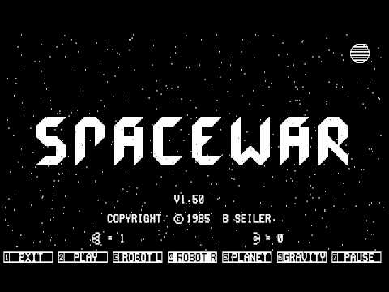
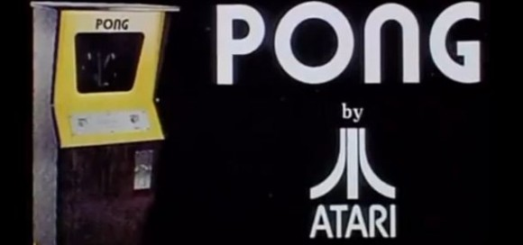
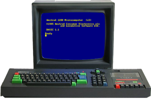

El Comienzo (Resumen) |
|
Los orígenes del videojuego se remontan a la década de 1950, cuando poco
después de la aparición de las primeras computadoras electrónicas tras el
fin de la Segunda Guerra Mundial, se llevaron a cabo los primeros intentos
por implementar programas de carácter lúdico. Así, fueron creados el Nim (1951)
o el Oxo (1952), juegos electrónicos pero que aún no son realmente videojuegos,
y el Tennis for Two (1958) o el Spacewar! (1961), auténticos pioneros del género.
Todos ellos eran todavía prototipos, juegos muy simples y de carácter
experimental que no llegaron a comercializarse, entre otras cosas porque
funcionaban en unas máquinas que solo estaban disponibles en universidades o en
institutos de investigación.
|

|
|

|
No sería hasta la década de los 70 en que, con el descenso de los costes de
fabricación, aparecieron las primeras máquinas y los primeros videojuegos dirigidos
al gran público. Títulos como Computer Space (1971) o el Pong (1972), de Atari,
inauguraron las primeras máquinas recreativas construidas al efecto, que funcionaban
con monedas. Poco después llegarían los videojuegos a los hogares gracias a las
consolas domésticas, la primera de las cuales fue la Magnavox Odyssey (1972), y más
tarde la exitosa Atari 2600 o VCS (de 1977), con su sistema de cartuchos
intercambiables. Por aquel entonces las máquinas arcade empezaron a hacerse comunes
en bares y salones recreativos, una expansión debida en parte a un matamarcianos que
alcanzó gran popularidad, el Space Invaders (1978). Otros juegos que marcaron esta
primera época fueron el Galaxian (1979), el Asteroids (1979) o el Pac-Man (1980).
|
|
En los años 80, la empresa norteamericana Atari hubo de compartir su dominio en
la industria del videojuego con dos compañías llegadas de Japón: Nintendo
(con su famosa consola NES) y SEGA (con la Master System). Paralelamente, surge una
generación de ordenadores personales asequibles y con capacidades gráficas que
llegaron a los hogares de millones de familias, como fueron el Spectrum, el Amstrad
CPC, el Commodore 64 o el MSX. Los videojuegos empiezan a convertirse en una poderosa
industria. Fue además una época muy creativa para los desarrolladores de videojuegos;
muchos de los principales géneros que existen hoy en día (conducción, lucha, plataformas,
estrategia, aventura...) tomaron forma en esta década. Por otra parte, aparecieron
también las primeras consolas de bolsillo, más conocidas como "maquinitas", que aunque
hasta la llegada de la Game Boy de Nintendo (1989) solo ejecutaban un juego cada una,
alcanzaron gran popularidad entre los más jóvenes.
|

|

|
Los años 90 traen el salto a la tecnología de 16-bit (como la SNES y la Mega Drive),
lo que significa importantes mejoras gráficas. Entra en escena el gigante Sony con su
primera Playstation (1994), mientras Nintendo y Sega actualizan sus máquinas
(Nintendo 64 y Sega Saturn). En cuanto a las computadoras, el progreso de los PC termina
por barrer del mapa a los demás sistemas salvo el de Apple. Aparecen juegos cada vez
más avanzados tecnológicamente, como los shooters en 3D. En el año 2002 entra Microsoft
en el sector de las videoconsolas con su Xbox, y en el 2006 Nintendo lanza su innovadora
Wii. Entretanto, Sony actualiza su exitosa Playstation (versiones II y III), y en los PC,
gracias a la expansión de internet, cobran protagonismo los juegos en línea y multijugador.
|